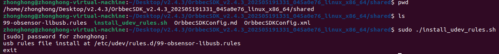

2.1. Quick Start on Windows Platform
2.1.1. Metadata registration
For windows,you need to register the metadata associated with frames (this includes things like timestamps and other information about the video frame).
Metadata registration follow this:/scripts/env_setup/obsensor_metadata_win10.md
Notes: If the metadata is not registered, the device timestamp will be abnormal, thereby affecting the SDK’s internal frame synchronization functionality.
2.1.2. build SDK package(.zip)
This section demonstrates how to quickly start and build SDK package on the Windows platform. The SDK version used here is v2.4.3.
First, extract the downloaded Orbbec SDK package, then navigate to the examples directory in the extracted folder and use CMake to compile the project.
Click the Configure button, and the following dialog will appear:

Click Finish, Set OpenCV_DIR to the installation directory of OpenCV, then click Generate, as shown below:
Open the sample project (orbbec_sdk_examples.sln) using Visual Studio 2019.

Use the ob_quick_start sample as an introductory example to understand and use the SDK API. First, build the ob_quick_start sample and run it to start capturing data streams.
Note: Make sure to copy the required SDK dynamic libraries(extensions & OrbbecSDK.dll) and OpenCV DLLs to the directory where ob_quick_start.exe is located. The OpenCV libraries are essential for rendering the sample views.

The ob_quick_start sample captures and displays data streams as shown below:

2.2. Quick Start on Linux Platform
2.2.1. install udev rules script
Please install it using the following commands:/scripts/env_setup/install_udev_rules.sh
cd OrbbecSDK_v2/scripts/env_setup
sudo chmod +x ./install_udev_rules.sh
sudo ./install_udev_rules.sh
sudo udevadm control --reload-rules && udevadm trigger
Notes: If this script is not executed, open the device will fail due to permission issues. You need to run the sample with sudo (administrator privileges).
2.2.2. build SDK package(.zip)
Build Requirements：
Operating System：Ubuntu 18.04 or later
Compiler：GCC，>=7.5
CMake v3.15 or later
OpenCV：Version 3.4.0 is recommended
Visual Studio Code：Recommended IDE for building and debugging
First, download the Linux version of the Orbbec SDK package and extract it. Then, navigate to the shared directory and install the udev script. This script ensures that the correct libusb driver is loaded. After installing the udev script, you can run the samples without sudo privileges.
The installation process is shown below:

Run the build_examples.sh script to compile the examples.

Navigate to the bin directory and run the ob_quick_start sample to capture data streams.

2.3. How to Use install package
If you do not want to compile the Orbbec SDK, you can use the SDK installation package. Taking v2.4.8 as an example, first download the corresponding installation package for your platform.
The file OrbbecSDK_vx.x.x_win64.exe serves as the installation package for the Orbbec SDK and Orbbec Viewer tools on Windows.
The file OrbbecSDK_vx.x.x_amd64.deb serves as the installation package for the Orbbec SDK and Orbbec Viewer tools on Linux x86_64, likes ubuntu.
The file OrbbecSDK_vx.x.x_arm64.deb serves as the installation package for the Orbbec SDK and Orbbec Viewer tools on ARM64，likes NVIDIA Jetson AGX Orin , NVIDIA Jetson Orin NX , NVIDIA Jetson Orin Nano , NVIDIA Jetson AGX Xavier , NVIDIA Jetson Xavier NX.
2.3.1. Install via .deb Package
On the Linux x64 (ubuntu) platform, install using the following command. (If you are using the Arm64 platform, please use OrbbecSDK_vx.x.x_arm64.deb)
sudo dpkg -i OrbbecSDK_v2.x.x_amd64.deb
Check the entire package path of the Orbbec SDK using dpkg -L orbbecsdk, while the header files and library files of the Orbbec SDK will be installed in the /usr/local path.
dpkg -L orbbecsdk
Run the Orbbec Viewer. sudo ./OrbbecViewer
2.3.2. Install via .exe Package
On the windows platform, Double-click OrbbecSDK_vx.x.x_win64.exe directly to install, After installation is complete, run OrbbecViewer or the Orbbec SDK from the installation directory.